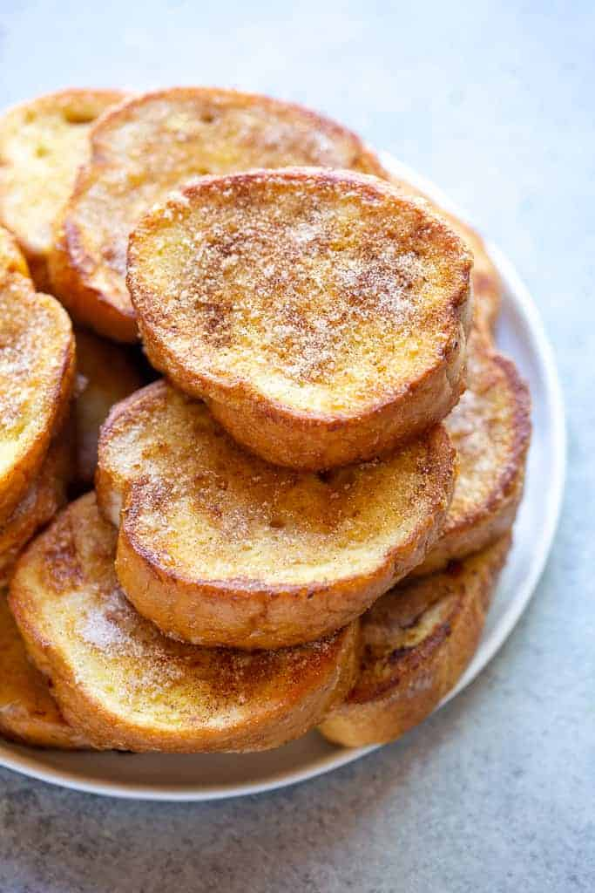

Torrijas (Spain)

Description
Torrijas are a classic Spanish dessert similar to French toast. They are
made from slices of stale bread soaked in milk or wine, coated in egg, and
then fried until golden. After frying, they are often sweetened with
honey, sugar, and cinnamon. Torrijas are traditionally enjoyed during Holy
Week (Semana Santa) but can be found in Spanish bakeries and homes
throughout the year.
Some ingredients
Stale bread (such as a baguette or country loaf)
Milk (or wine, traditionally)
Eggs
Sugar
Honey
Cinnamon
Olive oil (for frying)
Steps to make Torrijas
-
Soak Bread: Soak bread slices in warm milk (or wine) with sugar and
cinnamon.
- Dip in Egg: Coat soaked bread in beaten eggs.
-
Fry: Fry bread slices until golden. Sprinkle with sugar and cinnamon or
drizzle with honey.